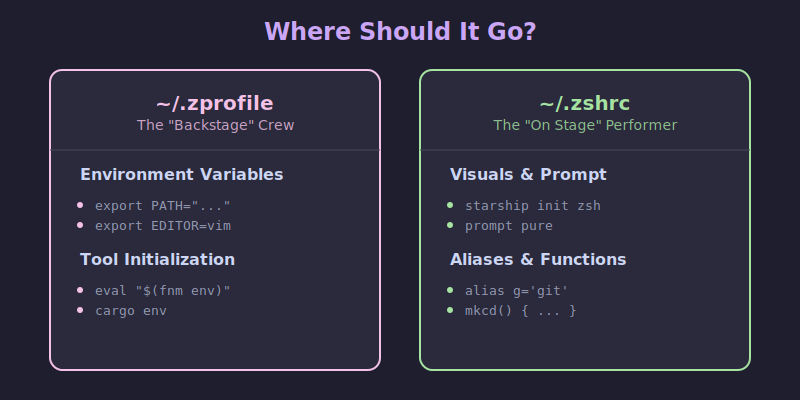
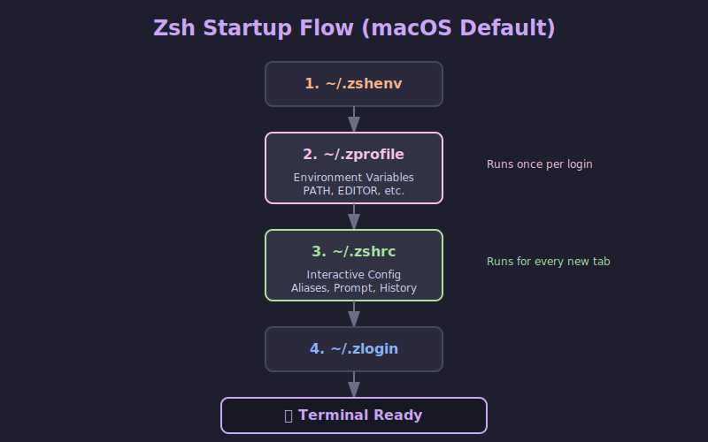

Mastering Zsh Startup: ~/.zprofile vs ~/.zshrc 🚀
If you've ever wondered why your terminal feels slow, or why your environment variables aren't loading where you expect them to, you're likely battling the Zsh startup order.
The distinction between ~/.zprofile and ~/.zshrc is one of the most common sources of confusion for developers moving to Zsh (especially on macOS).
TL;DR ⚡
~/.zprofileis for Environment Setup. It runs once when you log in (or open a terminal tab on macOS). Put yourPATH,EDITOR, and language version managers (likefnm,pyenv) here.~/.zshrcis for Interactive Configuration. It runs every time you start a new shell instance. Put your aliases, prompt themes, and key bindings here.

The Shell Startup Flow 🐚
To understand where to put things, you need to understand when files are loaded. Zsh has a specific hierarchy of configuration files.
Login vs. Interactive Shells
- Login Shell: The first shell you enter after authentication. On macOS, every new terminal tab or window is a login shell by default. This is a key difference from Linux, where opening a terminal usually starts a non-login interactive shell.
- Interactive Shell: Any shell where you can type commands.
Here is the actual flow of execution when you open a terminal on macOS:

The Loading Order
~/.zshenv: (Optional) Runs for every shell script and command. Avoid putting output or heavy logic here, as it can break scripts. Use it only for essential environment variables that must exist everywhere (rarely needed for average users).~/.zprofile: Runs only for login shells. This is your "setup" phase.~/.zshrc: Runs for interactive shells. This is your "customization" phase.~/.zlogin: (Optional) Runs at the very end of a login shell startup.
What Goes Where? 📁
1. ~/.zprofile: The Environment Layer 🌍
Think of this as the foundation of your house. It sets up the rules of physics (paths, variables) that everything else relies on.
What belongs here:
PATHmodifications: Adding directories to your executable path.- Environment Variables:
EDITOR,LANG,GOPATH,JAVA_HOME. - Tool Initialization: Things that modify the environment, like
pyenv,rbenv,fnm, orcargo.
Why?
These only need to be calculated once. If you put them in .zshrc, they will be re-calculated every time you open a sub-shell or run a script, which is wasteful and can lead to duplicate entries in your PATH.
# ~/.zprofile
# 1. Set up your PATH
# Ensure local bin is first so your tools override system ones
export PATH="$HOME/.local/bin:/opt/homebrew/bin:$PATH"
# 2. Set global variables
export EDITOR="nvim"
export VISUAL="nvim"
export LANG="en_US.UTF-8"
# 3. Initialize Version Managers (The Heavy Lifters)
# Doing this here keeps your shell startup snappy!
eval "$(fnm env --use-on-cd)"
eval "$(pyenv init -)"
2. ~/.zshrc: The Interactive Layer 🎮
Think of this as the interior decoration. It makes the house comfortable to live in.
What belongs here:
- Aliases:
alias g='git'. - Prompt: Starship, Powerlevel10k, or Pure.
- Completions:
compinit. - Key Bindings:
bindkey. - Shell Options:
setopt autocd,setopt histignorealldups.
Why? These settings only matter when a human is typing at the keyboard. A script running in the background doesn't need your fancy prompt or your git aliases.
# ~/.zshrc
# 1. Load your prompt (Visuals)
autoload -Uz promptinit && promptinit
prompt pure
# 2. Aliases (Shortcuts)
alias ll='ls -lah'
alias g='git'
alias gs='git status'
# 3. Shell Options (Behavior)
setopt autocd # cd by just typing directory name
setopt histignorealldups # Don't record duplicate history entries
setopt share_history # Share history between tabs
# 4. Completions (The Magic)
autoload -Uz compinit && compinit
Why Not Just Put Everything in One File? 🤔
You might be asking: "Why can't I just put my aliases in .zprofile and run them once? Why do I need to reload them?"
It comes down to Inheritance vs. Re-definition.
1. Environment Variables Inherit 🧬
When you set export EDITOR="vim" in a parent shell (like your login shell), every child process (sub-shells, scripts, programs) inherits that variable. You set it once, and it propagates everywhere. This is why .zprofile is perfect for export.
2. Aliases and Functions Do Not Inherit 🚫
Aliases (alias g='git') and shell functions are local to the current shell instance. They are not passed down to child shells.
- If you define an alias in
.zprofile, it exists in your top-level login shell. - If you then type
zshto start a sub-shell, or run a script, that alias disappears. - To make aliases available everywhere, you must re-define them in every new interactive shell. That is exactly what
.zshrcdoes.
3. Scripts Don't Need "Human" Features 🤖
When you run a shell script (e.g., ./deploy.sh), it starts a new, non-interactive shell.
- It doesn't need your fancy prompt.
- It doesn't need your
gitaliases. - It definitely doesn't want to wait for
oh-my-zshto load.
By keeping interactive config in .zshrc, you ensure that your scripts run fast and clean, without being polluted by your personal customization.
Common Pitfalls & Best Practices 🚫
🛑 Pitfall 1: Putting nvm or pyenv in .zshrc
The Symptom: You open a new terminal tab, and it takes 2-3 seconds before you can type anything.
The Cause: Version managers often have heavy initialization scripts. If you put them in .zshrc, they run every single time.
The Fix: Move them to ~/.zprofile.
🛑 Pitfall 2: Growing PATH
The Symptom: Your $PATH variable has the same directories listed 5 times.
The Cause: You have export PATH="$HOME/bin:$PATH" in your .zshrc. Every time you reload the config (source ~/.zshrc) or open a sub-shell, it appends the path again.
The Fix: Move PATH definitions to ~/.zprofile.
💡 Pro Tip: The "Reload" Trick
If you make changes to ~/.zprofile, they won't apply to your current shell immediately because .zprofile is only read at login.
You have two options:
- Close the tab and open a new one (easiest).
- Manually source it:
source ~/.zprofile.
For .zshrc changes, you can always just run:
source ~/.zshrc
A Robust Configuration Strategy 🛠️
If you use multiple machines (e.g., macOS at work, Linux at home), you might want a setup that handles both gracefully.
Since Linux terminals often start as non-login shells, they might skip ~/.zprofile. A common pattern to support both is to source .zprofile from .zshrc if it hasn't been loaded.
In your ~/.zshrc:
# ~/.zshrc
# If we are on Linux/Non-login shell, ensure environment is set
if [[ -o interactive && ! -o login ]]; then
[[ -f ~/.zprofile ]] && source ~/.zprofile
fi
# ... rest of your interactive config
Summary
| File | Purpose | Examples |
|---|---|---|
~/.zshenv |
Critical Env Vars | ZDOTDIR (Advanced users only) |
~/.zprofile |
Environment Setup | PATH, EDITOR, eval "$(pyenv init -)" |
~/.zshrc |
Interactive Config | alias, prompt, bindkey, compinit |
Keep your environment in .zprofile and your experience in .zshrc, and you'll have a fast, clean, and reliable terminal experience.